Week 2 advanced Project Janus from a working virtual lab into a monitored and script-driven test environment. The main work included deploying Sysmon, validating Windows Event Forwarding, finalizing the Sandworm attack mapping, confirming segmented network access, and building a controlled Modbus baseline–write–restore workflow.
The week focused on endpoint visibility, controlled attack preparation, and validating that pfSense permits only the traffic required by the planned emulation.
5Confirmed Sysmon event types
4OT Python modules implemented
1End-to-end OT action orchestrator
Objective
Result
Status
Deploy Windows endpoint telemetry
Sysmon 15.2 installed with Olaf Hartong configuration
Complete
Centralize Windows events
Source-initiated WEF subscription delivered all Sysmon events to Windows Server
Validated
Use WEF for final export workflow
Forwarding works, but reliable export was not achieved; local export remains the practical collection path
2022 Ukraine electric-power campaign mapped to Enterprise and ICS tactics
Complete
Begin attack scripting
OT baseline, write, restore, shared client, and orchestration workflow developed
Mostly Complete
Windows Telemetry: Sysmon and WEF
Sysmon 15.2 was installed only on the Windows 11 endpoint using the unmodified Olaf Hartong configuration. Test activity included application launches, web connections, file creation and deletion, DNS queries, and user logon/logoff activity.
Endpoint Configuration
Sysmon64.exe -accepteula -i sysmonconfig.xml
Events are recorded in Microsoft-Windows-Sysmon/Operational.
Forwarding Configuration
Subscription:Sysmon
Mode: Source computer initiated
Destination: Windows Server · Forwarded Events
Transport: WinRM HTTP · TCP/5985
Scope: All Sysmon events
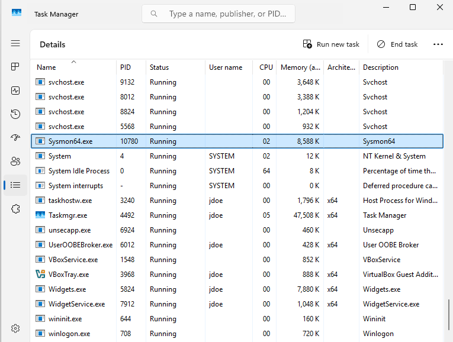
Sysmon runningSysmon64.exe is active on the Windows 11 endpoint.
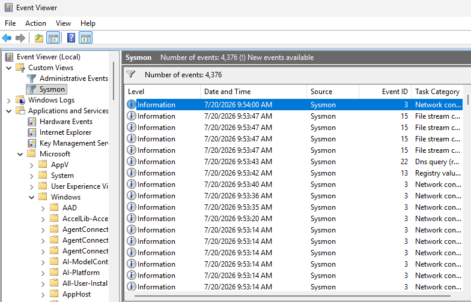
Local event generationThe endpoint generated process, network, DNS, file, and registry telemetry.
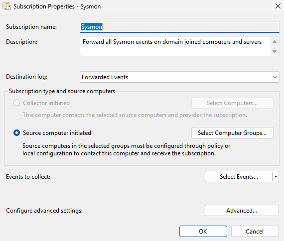
Source-initiated subscriptionThe Sysmon subscription forwards events to the server’s Forwarded Events log.
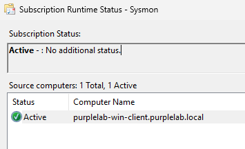
Active sourceThe domain-joined Windows endpoint appears as an active source computer.
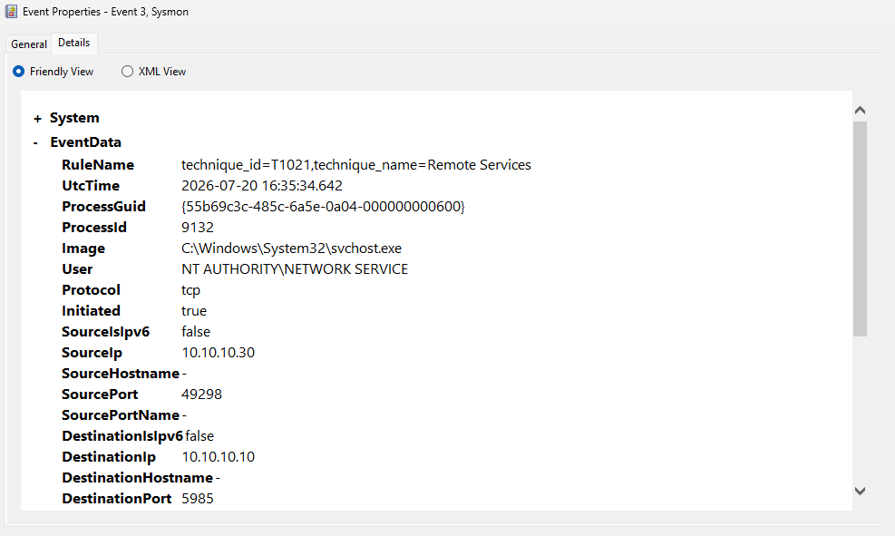
Event ID 3 · Network connectionForwarded telemetry captured a connection involving WinRM on TCP/5985.
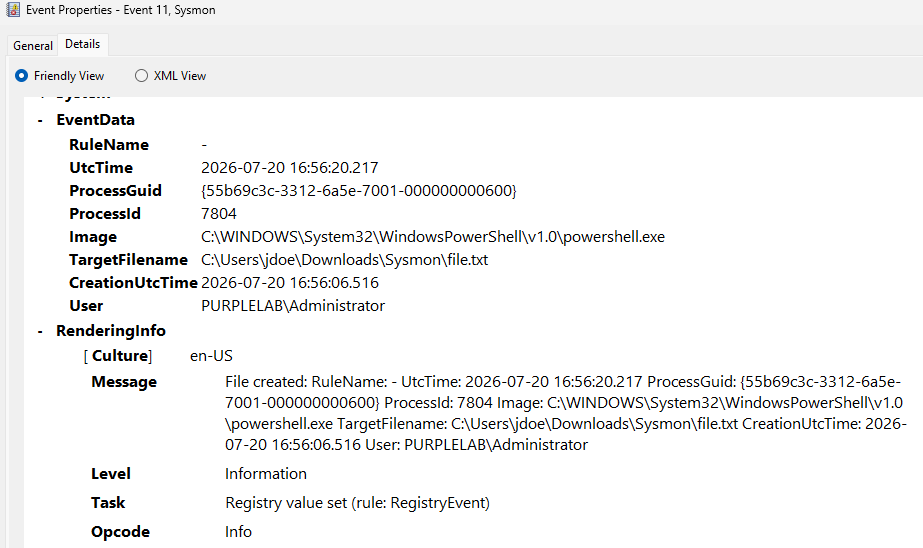
Event ID 11 · File creationPowerShell file activity includes process, user, path, and UTC timestamp fields.
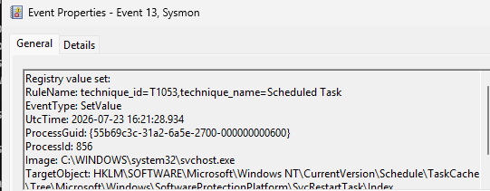
Event ID 13 · Registry value setA Task Scheduler registry change is tagged with scheduled-task technique context.
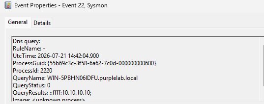
Event ID 22 · DNS queryThe event records the queried domain, result, process context, and timestamp.
Collection decision: WEF is operational and proved centralized visibility, but it is not being used as the final log-export method because exports from the collector were unreliable. Project Janus will preserve this implementation as evidence while using a more dependable local export workflow for attack datasets.
Segmentation Validation
Week 2 verified that firewall policy supports the planned emulation without broadly opening traffic between the ATTACK, IT, and OT segments.
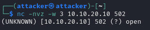
Approved OT pathKali successfully reached Conpot at 10.10.20.10:502, allowing the planned Modbus action.
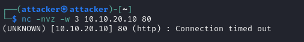
Restricted IT pathA connection from Kali to 10.10.10.10:80 timed out, demonstrating that unrelated cross-subnet access remained blocked.
Sandworm Threat Profile
The emulation is based on Sandworm’s 2022 Ukraine electric-power attack. The real campaign combined access and persistence mechanisms, encrypted command-and-control, GPO-based deployment, unauthorized SCADA commands, and destructive impact. Project Janus translates that sequence into safe, observable lab behaviors rather than reproducing malware.
Campaign Characteristics
Living-off-the-land and administrative tooling
Movement from enterprise systems toward OT
Group Policy abuse for broad execution
Unauthorized industrial command execution
Destructive impact designed to delay recovery
Project Scope Decisions
Excluded Unknown initial access and Neo-REGEORG web-shell deployment
Assumed Administrative access required for the lab chain
Mapped PowerShell, remote services, GPO modification, data destruction, and ICS command activity
Deferred AI-generated detection and automatic pfSense response
Campaign Behavior
Janus Translation
Primary Evidence
Remote access and execution
Kali RDP and PowerShell activity on the Windows client
Sysmon process, network, DNS, and logon telemetry
Administrative movement
PowerShell remoting from client to Server/DC
Sysmon network/process events and Windows logs
GPO-based distribution
Benign test GPO distributed back to the client
GPO changes, scheduled-task/registry activity
Destructive malware impact
Safe wiper limited to disposable client files
File creation/deletion and PowerShell telemetry
Unauthorized SCADA commands
Controlled Modbus coil change on Conpot
JSON evidence, Conpot logs, packet capture
Planned Sandworm-Inspired Attack Chain
The sequence mirrors the campaign’s enterprise-to-OT progression while keeping initial access assumed and every impact reversible.
1. Kali RDPRemote connection to Windows client
2. DiscoveryPowerShell host and domain discovery
3. Admin AssumptionKnown lab credentials; no credential theft
4. PS RemotingClient to Windows Server/DC
5. Test GPOBenign policy distributed to client
6. Safe WiperDeletes disposable test files only
7. OT ScriptsCompromised client runs Modbus workflow
8. Coil ChangeControlled change and restoration on Conpot
Controlled OT Attack Scripting
The OT workflow is designed to be explicit, reversible, and evidence-driven. It records a pre-action baseline, requires operator confirmation before writing, verifies the result, and restores the exact original value.
File
Responsibility
Status
modbus_client.py
Shared safe Modbus client, configuration loading, validation, and helper functions
Complete
modbus_baseline.py
Reads approved values and stores the original state in a timestamped JSON baseline
Complete
modbus_write.py
Performs one allowlisted coil write, confirms it by reading back, and stores attack evidence
Complete
modbus_restore.py
Restores the coil from the exact baseline file selected by the operator
Complete
run_ot_action.ps1
Orchestrates baseline, write, timeline recording, and restoration from the Windows client
Baseline captureThe original Modbus state is saved under the baseline evidence directory before any write occurs.
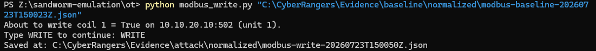
Controlled writeThe script announces the target, requires the operator to type WRITE, changes coil 1 to True, and saves normalized JSON evidence.
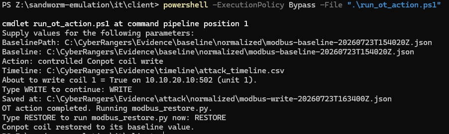
End-to-end orchestrationrun_ot_action.ps1 records a baseline, performs the approved write, updates the timeline, and restores the coil to its original value.
Safety control: The workflow does not select an arbitrary “latest” baseline. Restoration requires the exact pre-write JSON file, reducing the chance of restoring the wrong state and preserving older baselines for behavioral comparison.
Troubleshooting and Engineering Decisions
Windows Event Forwarding
Events did not arrive consistently
Subscriptions were deleted and recreated, WinRM was checked, network connectivity was confirmed, and FQDN/WSMan errors were investigated. Replacing HTTPS/5986 with HTTP/5985 allowed the source-initiated subscription to become active.
Evidence Collection
Forwarding worked, exporting did not
WEF remains useful as proof of centralized collection, but it was removed from the critical attack-data path because reliable exports could not be produced. This avoided allowing one unstable component to block the project.
OT Safety
Writes needed a guaranteed rollback
The Modbus action was separated into baseline, write, and restore modules. Explicit confirmation and exact baseline selection reduce accidental changes and make every test easier to audit.
Segmentation
Attack access had to be narrow
pfSense was validated with both a successful approved connection to Conpot on port 502 and an unsuccessful connection to an unrelated IT service on port 80.
End-of-Week Status
Completed
Sysmon endpoint deployment
Source-initiated WEF validation
Event IDs 3, 11, 13, and 22 confirmed
Sandworm ATT&CK mapping finalized
Allowed and blocked network paths validated
OT baseline/write/restore workflow operational
PowerShell orchestration operational
Next Steps
Export Sysmon locally during baseline and attack runs
Implement the Windows-side Sandworm-inspired sequence
Create disposable data for safe-wiper testing
Capture synchronized Windows, Conpot, Linux, and PCAP evidence
Run the full IT-to-OT chain
Defer AI detection and automated response until attack telemetry is stable